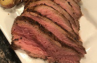
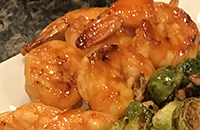
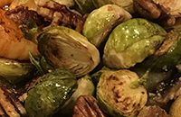

 Fresh Herb and Spice Reverse Seared Tri-tip- This is a delishus meat that can be made inside or outside.
 Honey Sriracha Shrimp- Sweet honey shrip with a spicy after taste.
 Roasted Red Potato with Feta- Amazing tasty, potatos for any occation.
Roasted Red Potato with Feta- Amazing tasty, potatos for any occation.
 Brussel Sprouts with Toasted Pecans - Even if you don't like brussel sprouts you will love these.